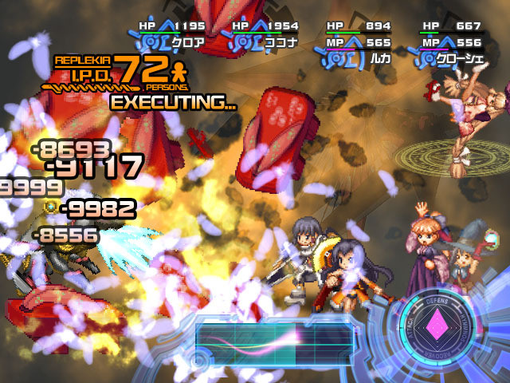

Main Story Walkthrough (Phase 1–5)
Walkthrough checkpoints across メタ・ファルス from パスタリア to ソル・マルタ. Clear local I.P.D. radar sweeps and インフェルスフィア dives as each Phase opens.
On This Page
Phase 1 · Pastalia, Rakshek & The Split
Opening Mission & Phase 1 Split
-
Begin in Pastalia and form the Vanguard duo. Patrol パスタリア and ミント区 with クロア and ココナ while learning Timed Active Guard defense phases and early I.P.D. suppression.
-
Escort Luca through Mikuri Forest and Verticave. Protect ルカ across 美久莉の森, descend into ヴェルティカブ, and sweep 月下水路 chests early so nothing seals later.
-
Save before choosing ルカを護る vs. クローシェ様を護る. After escaping through 大鐘堂 and ラクシャク, lock Archive Save A right before the crisis fork that dictates all Phase 2 maps and locks the unchosen heroine at Cosmosphere Lv.5.

Phase 2 · Separate Journeys & Infelsphere
2A. Luca Route (Sacred Army Wing)
-
Advance with Amarie through Enna's City and military outposts. Recruit アマリエ, explore エナの街, and cure infected districts using ダイバーズセラピ.
-
Defeat Conductor Activation & ジャクリロボ. Guard timed laser sequences carefully and finish Phase 2's exclusive Sacred Army missions before path convergence.
2B. Cloche Route (Grand Bell Wing)
-
Defend Grand Bell alongside Leglius. Partner with Knight Commander レグリス inside 大鐘堂 and repel Twin Wing aerial assault encounters.
-
Clear Rakshek Underground against Shun and sacred constructs. Break through ラクシャク's lower sanctum against シュン using Song Magic synchronized across two singers.
2C. Infelsphere Synchronization
-
Clear インフェルスフィア Lv.1 through Lv.3 as Phase 2 converges. Connect both ルカ and クローシェ inside the shared dreamscape to earn early 合体詩魔法 (デモンジェル, インバートブリッド) and bath costumes.
Phase 3 · Party Convergence & Jacqli's Join
3. Unified Roster & Cat Mansion
-
Reunite both Phase 2 wings and recruit Jacqli. Bring ジャクリ into the backline roster and begin opening her Cosmosphere (Jacqli CS). Clear 猫屋敷 and check specialty stalls for rare デュアリスノ結晶.
-
Advance Infelsphere Lv.4 and harvest Topic branches. Push through インフェルスフィア Lv.4 and clear remaining トークマター across campfires while holding every パラダイムシフト save ready.
Phase 4 · Heavenly Tower & Metafalica Core
4. Ascent to the Celestial Plains
-
Clear Gyro Stabilizer, Heavenly Tower & Promise Hill. Climb through the ジャイロスタビライザ and 天界の塔 toward 約束の丘 and メタファリカの丘.
-
Conclude Infelsphere Lv.5 and lock your chosen Lv.5 Paradigm Shift. Resolve the final crisis involving インフェル and ネネシャ and clear Lv.6 through Lv.9 for your selected ending partner (Play Order).
Phase 5 · Clouds Wharf, Raki & Sol Marta
5. Final Chapter & Boss Strategy
-
Advance across Clouds Wharf and recruit Shun. Cross 雲の波止場 where シュン joins as your fifth Vanguard alongside フレリア's support.
-
Defeat ラキ within five turns at ソル・マルタ. On unmodified English PS2 discs, cast stacked レプレキア + Lv.4 合体詩魔法 (ロリポップスイーツ or ファンタスマゴリア) before Defense Phase 3 triggers フラクタルチェンジ.
-
Finish all 100 I.P.D.s and defeat the Sol Marta Final Boss. Collect ultimate gear including ハーモボディスーツ, フレリアの閃光, and リクドウハジャ in ソル・マルタ before entering the final climax battle.